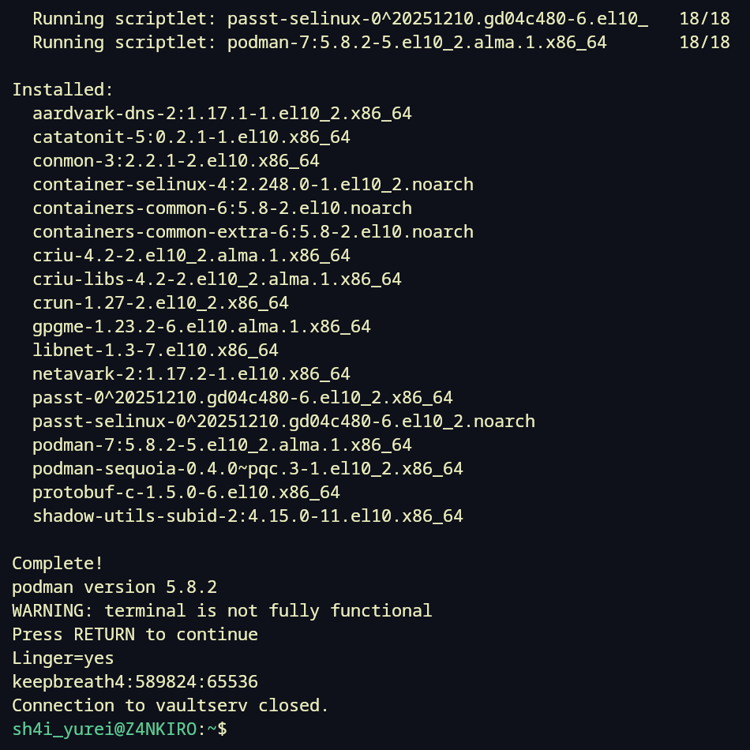
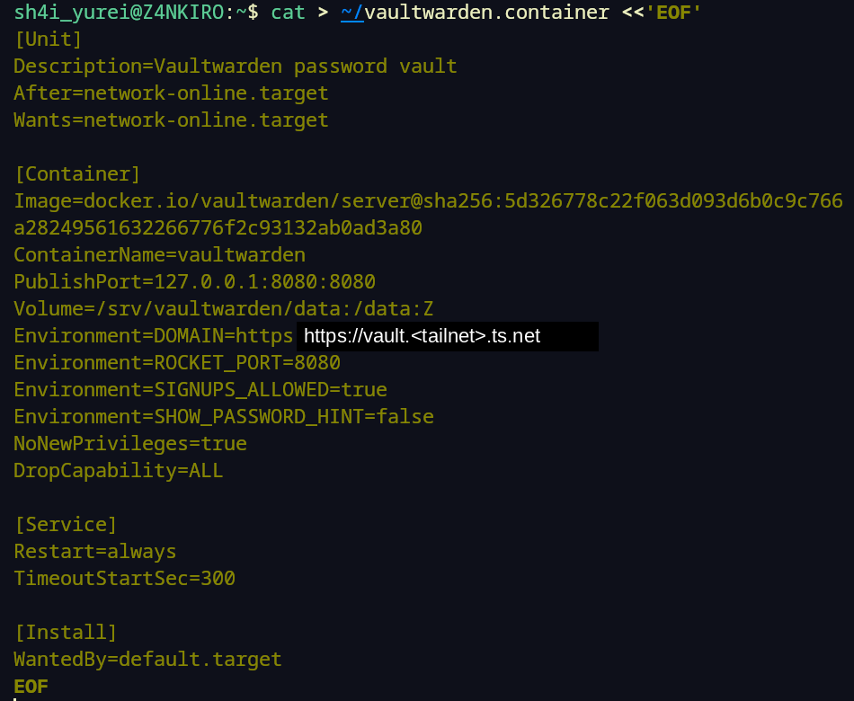
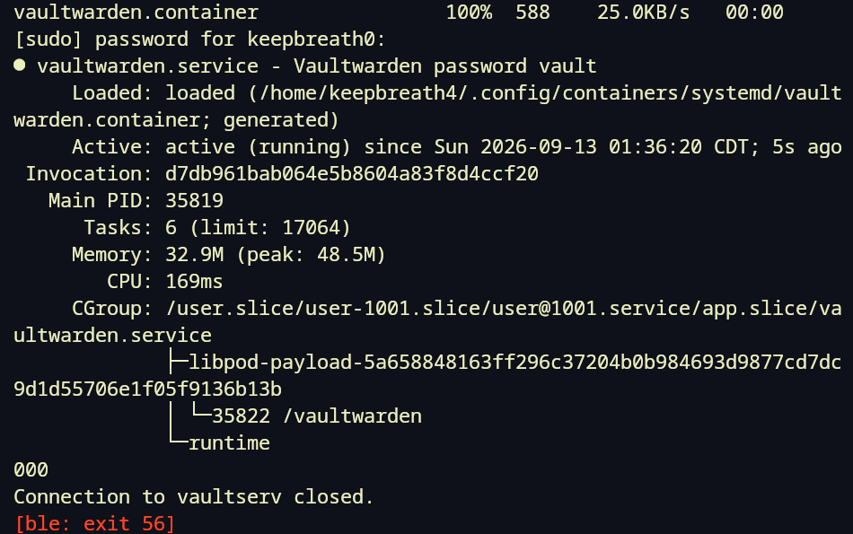
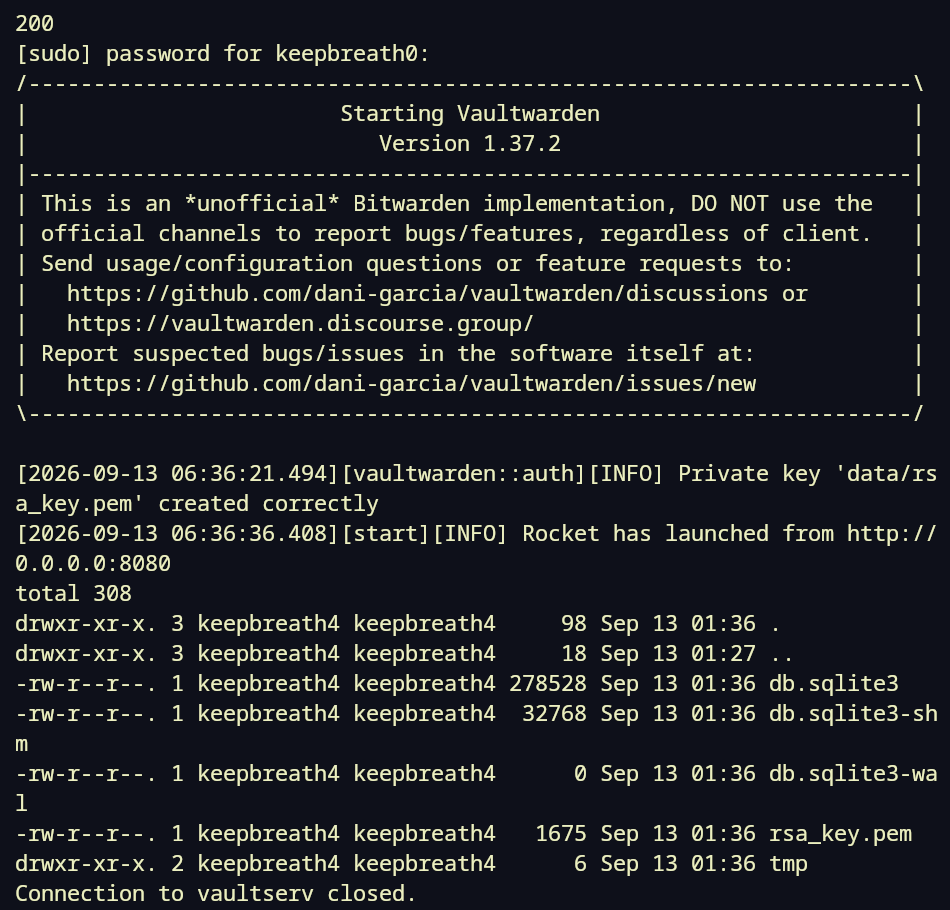
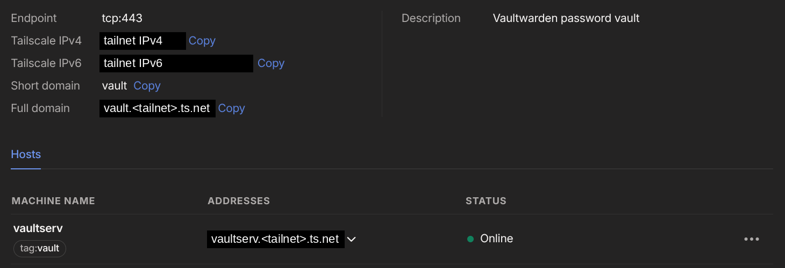
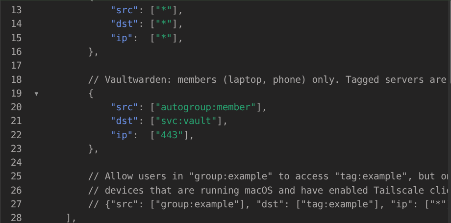
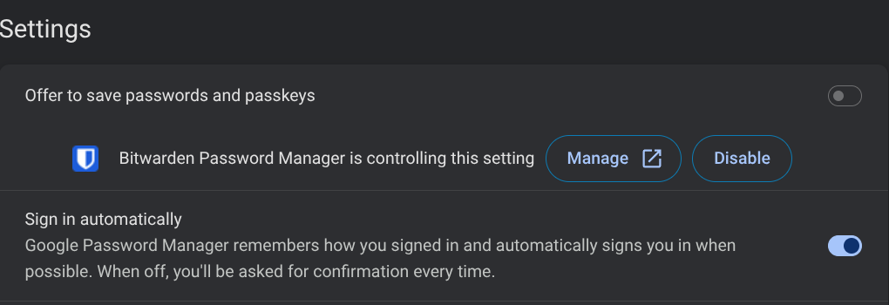
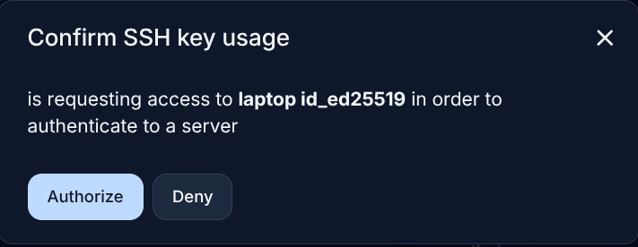
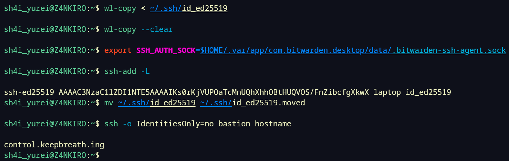

There is a folder on my laptop that I have been calling the lockbox. It started as the place I put API keys because I didn't have a good way to store them, but it snowballed into a hackers wet dream. It grew with everything I built for the site and the home lab, and by this month it held three sudo passwords, the passphrase for the control plane's key, the mail credential, a Cloudflare DNS token, deploy keys, and an environment file holding six API tokens. Plain files, on an unencrypted disk, most of them readable by any process running as me. If the laptop were ever compromised, every piece of the site's infrastructure would go with it, and a few of those secrets reach into personal accounts as well. I knew that the whole time it was growing but time and attention kept me from fixing the problem.
The infrastructure I am building needs secrets handled properly. Agents and automation have to use them without a person pasting them in, and without one folder that hands out everything to whoever can read it. That is several projects, and this post is the first of them. It moves every secret a person uses into a vault on a server I run, and empties the lockbox of them. The next project is a secrets server for the machines. The backups project after that backs up this vault, which is the piece that makes it safe to depend on.
My ordinary passwords were a mess as well. Some were saved in Chrome, some in a Bitwarden account on bitwarden.com, some in Samsung Pass on the phone, and there was a file on the workstation desktop with a password in its name. I have never been good at password hygiene, because it is an unwieldy problem that gives me a headache. Since the vault for the infrastructure secrets is also a password manager, those went into it too.
By Sunday evening the lockbox held no human secret, every browser and the phone were filling passwords from the vault, and the laptop had no SSH private key on its disk. The login to the bastion comes out of the vault instead. It took one late night and the Sunday after it.
Why Vaultwarden, on its own VM
The secrets split two ways, and which side a secret is on decides where it lives. A person needs one unlock and frictionless fill everywhere, while a machine needs to prove what it is and receive only what it is allowed. Those are different products. This project is the human half, everything I type or paste myself. The machine half, deploy keys and tokens that a server reads unattended, is OpenBao, the open-source fork of HashiCorp Vault. A script I run by hand on the laptop can read a token from this vault while it is unlocked. A server's automation cannot, because that puts a personal vault in the path of a machine.
My first idea was to encrypt the lockbox in place and keep the folder. That would have fixed the plain files on disk and nothing else. It would still be one folder on one laptop, with no way for the phone or the workstation to use it, and no way for a server to fetch a machine secret without the laptop in the loop. A vault for the human secrets, and a secrets server for the machine ones, fits what the infrastructure needs. The folder gets emptied rather than hardened.
For the human half, Vaultwarden is a small open-source server that speaks Bitwarden's protocol. The official Bitwarden extension, phone app, desktop app and command line all work unchanged against it, pointed at my own server instead of Bitwarden's. That is the reason to pick it over staying on bitwarden.com, or moving to KeePassXC or pass. I already know the Bitwarden clients and they work everywhere I need them, and this way I get them on a server I own.
It runs on VaultServ, a small AlmaLinux 10 VM with one CPU and 3 GB of memory, on the Windows tower in my office that hosts my lab VMs. It has its own VM rather than sharing the one that already runs my monitoring, because a password vault should not share a fate with a box that gets rebuilt and experimented on. Nothing else will ever run on VaultServ, and it is reachable only over my tailnet. Tailscale builds a private network between my own devices, so the vault has no port on the home LAN and nothing on the public internet. My laptop, my workstation and my phone can reach it and nothing else can.
The trade for running the server myself is that the backups are mine to get right, and as of this post there are none. Bitwarden's hosted service would have handled that for me. I am taking the risk on for a short while, with the old stores left in place as the fallback.
Getting started...
The VM was built Saturday night. By the time it was patched and on the tailnet it was a bit after one in the morning, and the Vaultwarden work started from there. The first login was over Tailscale SSH, which means Tailscale checks that the connection comes from a device on my tailnet and there is no SSH key to manage.
Podman was not installed, which fit, since the VM build stops at a patched box on the tailnet. The container setup follows the three DigitalOcean droplets that run the site, step for step. Podman comes from the AlmaLinux repositories, and the container runs under a numbered account, keepbreath4, with a home directory and lingering turned on. Lingering means systemd starts that user's services at boot and keeps them running after the SSH session closes, so the container is that user's systemd service rather than a process tied to a login.
Rootless Podman also needs the account to own a block of subordinate user IDs, which are the host IDs that users inside the container get mapped to, and useradd hands one out on its own.

keepbreath4 with Linger=yes and its subordinate ID range.The droplet that serves the site needed a kernel setting, a sysctl, that lets an unprivileged user bind ports under 1024. This box gets by without it, since Vaultwarden listens on a high port bound to localhost and Tailscale fronts it, so the container user never needs a low port. One loosening fewer.
Vaultwarden 1.37.2 under Quadlet, and a health check that came back empty
The image is pinned by digest, the same way the bastion's runner image is pinned. A digest is the hash of the exact image contents, so vaultwarden/server@sha256:5d32... names one specific build and latest names whatever was pushed most recently. Pulling by tag and pinning by digest means an update is a change I make on purpose.
The container runs under Quadlet, which is Podman's way of describing a container as a systemd unit file. It lives at ~/.config/containers/systemd/vaultwarden.container in keepbreath4's home. The port is published on 127.0.0.1:8080 only, every Linux capability is dropped, and ROCKET_PORT=8080 tells Rocket, the Rust web framework Vaultwarden is built on, to listen there rather than on port 80. Vaultwarden's DOMAIN setting is the tailnet name it will be published under, set before the first account exists, because passkeys and attachment links embed it.

DropCapability=ALL.The data directory is a plain directory on the host at /srv/vaultwarden/data, mounted straight into the container from that path rather than kept in a Podman-managed volume. That was decided before the install, because a future backup job has to read it as an ordinary directory, and there is no backup job yet. Until there is, this directory is the only copy of every password, so the old stores do not get deleted at the end of this post.
First start:
Active: active (running) since Sun 2026-09-13 01:36:20 CDT; 5s ago
Memory: 32.9M (peak: 48.5M)Then the health check five seconds later:
$ curl -s -o /dev/null -w "%{http_code}\n" http://127.0.0.1:8080/alive
000Status 000 from curl means it never got an HTTP response at all, and exit code 56 means the connection opened and then dropped. The service was active, memory was climbing, and nothing was answering.

000, curl exiting 56.The container log had the answer. On first boot Vaultwarden generates the RSA key it uses to sign login tokens, and on one CPU that took fifteen seconds:
[2026-09-13 06:36:21.494][vaultwarden::auth][INFO] Private key 'data/rsa_key.pem' created correctly
[2026-09-13 06:36:36.408][start][INFO] Rocket has launched from http://0.0.0.0:8080There was nothing to fix. The second check answered 200. "Active" from systemd means the process started, and on a slow box that is not the same as ready.

The data directory listing showed the next thing to fix. The SQLite database and the signing key were mode 644, readable by any account on the box. This VM only has the two accounts I made, but that is the same mistake as the lockbox, so the directory got 700 and the two files got 600. The ls I ran straight after to confirm it said Permission denied, because it ran as keepbreath0 and the directory now belongs to keepbreath4 alone. That is the point, and sudo ls showed the modes.
Published as a Tailscale Service
The vault gets its name from a Tailscale Service, which is a name and address on the tailnet that belong to the service rather than to a machine. I defined it in the admin console first, because a host cannot advertise a name that does not exist yet. The name is vault and the endpoint is tcp:443. Tailscale assigned it its own 100.x.y.z address and the name vault.<tailnet>.ts.net, where the middle part is the random suffix every tailnet gets. Whichever approved host advertises the service answers at that address.
Then on the VM:
sudo tailscale serve --service=svc:vault --https=443 127.0.0.1:8080That tells Tailscale to answer HTTPS on 443 with a certificate it issues for the name, and hand the traffic to the container on localhost. The first run opened a page to enable Serve on the node, a one-time click. After that the Service's Hosts tab listed vaultserv and I approved it. Approval is per host on purpose. It is what stops a stray machine on the tailnet from claiming the name.

vault Service in the admin console with vaultserv approved as its host.Access on the tailnet is controlled by a policy file, and mine still carries Tailscale's default grant, which lets every device reach every other device. Replacing that is its own job and not a two in the morning edit, because a wrong line there cuts off every machine in the house. I added the explicit rule anyway, so the vault keeps working the day the wildcard goes:
{ "src": ["autogroup:member"], "dst": ["svc:vault"], "ip": ["443"] }The autogroup:member source is the laptop and the phone, the devices logged in as me. Tagged servers are not members, so the bastion and the monitoring VM will not reach the vault once the wildcard is gone, which is correct. A server has no business in my password vault.

svc:vault grant in the policy file, sitting under the default allow-all.$ curl -s -o /dev/null -w "%{http_code}\n" https://vault.<tailnet>.ts.net/alive
200The name, the certificate, the grant and Vaultwarden were all working from the laptop.
The extension on the workstation said "Failed to fetch"
I created the account in the web vault and installed the Bitwarden extension in Chrome on the laptop. It signed straight into my old bitwarden.com account instead of my server, because the server choice is a dropdown on the email screen, labelled "Logging in on", and it has to be changed to Self-hosted with the server URL before anything is typed. An extension that already holds a login shows the vault and never shows that screen. Logging out, then choosing the server first, worked.
On the workstation the same extension got as far as the password step and said "Failed to fetch". From a terminal there:
> curl.exe -s -o NUL -w "%{http_code}\n" https://vault.<tailnet>.ts.net/alive
000
> nslookup vault.<tailnet>.ts.net
Server: UnKnown
Address: 192.168.x.x
*** UnKnown can't find vault.<tailnet>.ts.net: Non-existent domainThe name was going to the LAN's DNS server, which has never heard of .ts.net. The Tailscale client on the workstation had "Use Tailscale DNS" switched off. The network path was fine, since curl --resolve with the Service's address returned 200. Only the name was broken. The fix was tailscale set --accept-dns=true, which adds a split route so that .ts.net names go to Tailscale's resolver and everything else stays on the LAN server. After that curl by name returned 200 and the extension logged in.
Running nslookup again still said the name did not exist, and that is a Windows quirk rather than a problem. Windows keeps per-domain DNS rules in a table called the NRPT, which is what Tailscale writes its split route into, and nslookup ignores that table and talks to one server directly. Tailscale's DNS documentation says the same. The browser and curl go through the system resolver and see the route, and Resolve-DnsName in PowerShell is the test that does too.
By then it was after two in the morning. The server was up and the account existed with nothing in it, and I went to bed.
Sunday, and every store into the vault
I picked it up around ten on Sunday morning at the import step. Vaultwarden's web interface has Tools, Import data, with a format dropdown, and the order I had decided on beforehand was the old Bitwarden vault first, then the browsers, then the plain files and SSH keys last, so the riskiest data moves after the process is proven on the rest.
The Bitwarden export came out of bitwarden.com as JSON and went in as Bitwarden (json) without complaint. I had not paid attention to which export I asked for. There is a password-protected one and a plain one, and I had the plain one, which meant every password I had was in clear text in ~/Downloads for about five minutes. I shredded it with shred -u straight after.
The Chrome and Firefox exports are only ever CSV, so those were clear text by design, imported as Chrome (csv) and Firefox (csv) and shredded the same way. Zen, the browser I had been meaning to make my daily one, turned out to hold one password, which says how little it had actually been used for logging into anything.
Once it was logged in, the extension offered to make itself Chrome's default password manager, and after that Chrome's settings page shows "Offer to save passwords and passkeys" switched off, with "Bitwarden Password Manager is controlling this setting" underneath. Chrome will not turn its own saving back on while the extension holds that setting.

Firefox has no equivalent. Bitwarden's help page says to turn off Firefox's password saving by hand, which is a checkbox under about:preferences#privacy, and a Firefox update or a stray click can turn it on again. I turned it off on both machines and will have to keep an eye on it.
Chrome's old password store is still full and still synced to my Google account. It gets deleted once the vault has a backup, and not before.
Signups on the server stay open. The people I live with should be able to make their own account if they want one. Each account is its own encrypted vault under its own master password, so sharing the server shares nothing else. How their phones and laptops reach it is a later question, since they are not on the tailnet.
Unreachable...
On the phone, over mobile data, https://vault.<tailnet>.ts.net/alive did not load. The Service's address did not load. The VM's own tailnet address did not load either. Chrome on the phone said the address was unreachable. The Tailscale app showed connected, and from the workstation tailscale ping to the phone got pong from phone via DERP(dfw). The phone had answered, and the reply had come back through Tailscale's relay in Dallas.
I checked Private DNS, the "Use Tailscale subnets" switch and the client version first, and all three were fine. The clue was the word "unreachable". If the name or the route had existed and the server were down, Chrome would have said "refused" or "timed out", because the packets would have had somewhere to go. "Unreachable" means Android had no route at all for Tailscale's 100.x addresses. The app was signed in, and it answers Tailscale's own pings itself, but the VPN tunnel it is supposed to hold open was not up. Disconnecting and reconnecting in the app made Android rebuild the tunnel. The vault loaded, and the Bitwarden app logged in against the server.
Samsung Pass, with no importer
Samsung Pass exports a .spass file, and the Bitwarden app cannot import it, on the phone or anywhere else. I sent it to the laptop with Taildrop, which is Tailscale's file transfer between a person's own devices, and looked at the format.
The format is documented by the open-source converters people have written for it, such as spasstocsv. The file is base64 of a 20-byte salt, a 16-byte initialisation vector (the random starting block the cipher needs), and then the data encrypted with AES-256-CBC, the key derived from the export password by PBKDF2-SHA256 at 70,000 rounds. PBKDF2 is the standard way to stretch a password into an encryption key by hashing it many thousands of times. I did not want to run somebody else's converter against a file of all my phone's passwords, so I wrote a ten-line script that used only Python's standard library and openssl. Inside was a set of semicolon-separated tables with base64 fields, one table each for logins, cards and addresses.
Out came 47 logins, 25 for websites and 22 for Android apps, which Samsung stores as android://<signature>@<package>. I wrote them as a Chrome-style CSV and imported that as Chrome (csv), with the app entries named app: <package> so they read in the vault list. Bitwarden's Android autofill matches on the package name, so the odd-looking address is the useful part. The one card and one address did not carry over, since the CSV importer only takes logins. They go in by hand. The .spass file, the decrypted tables and the CSV were all shredded afterwards.
That finished the phone. The Bitwarden app is pointed at the server, set as the autofill service, with biometrics on.
The SSH key comes out of the vault
The SSH keys went last, after everything else had proven the process. The Bitwarden desktop app can act as an SSH agent, which means it holds the private key in the unlocked vault and answers ssh's request to sign a login challenge, so the key never has to exist as a file. This is the same job ssh-agent does on the bastion, done by the vault.
The desktop app is Bitwarden 2026.8.0 from Flathub, logged in against the server. The agent switch is under Settings, reached on Linux with Ctrl and comma because the menu bar is hidden. I copied the laptop's key to the clipboard with wl-copy < ~/.ssh/id_ed25519, made a new SSH key item, chose Import key from clipboard, and cleared the clipboard. The key is in OpenSSH format, so it went straight in.
The app is a Flatpak, the sandboxed way of installing desktop apps on Linux, and its agent socket is under the app's data directory, not in the home directory where a native install would put it:
export SSH_AUTH_SOCK=$HOME/.var/app/com.bitwarden.desktop/data/.bitwarden-ssh-agent.sock
ssh-add -L
ssh-ed25519 ... laptop id_ed25519The ssh-add -L command lists the public keys the agent is offering, and there was the laptop key, served from the vault. For the real test I moved the private key file aside, so ssh could not possibly be reading it, and logged into the bastion:
mv ~/.ssh/id_ed25519 ~/.ssh/id_ed25519.moved
ssh -o IdentitiesOnly=no bastion hostname
control.keepbreath.ing
ssh use the vault's key.
ssh-add -L listing the vault key, the file moved aside, and ssh bastion returning the control plane's hostname.The IdentitiesOnly=no override was there because the laptop's SSH config sets IdentitiesOnly yes and names the key file, and I did not want the config to hide whether the agent was answering. It turned out not to be needed. Plain ssh bastion works with the file gone, because the config's IdentityFile still points at the key's name and the .pub half is enough for ssh to pick the matching key out of the agent. The socket export went into ~/.bashrc, and the moved-aside key got shredded.
The workstation's key from the lockbox went the same way. I imported it, moved the file aside, tested by tailnet address, got WSOPTICON1 back, and shredded it, along with a Kate swap file that had sat next to it since July. The ~/.ssh directory now holds id_ed25519.pub and no private key.
Emptying the lockbox
This is the step the whole project was for. The lockbox held ten files of human secrets, the ones listed at the top of this post plus a few spent or retired items. Copying each value by hand through the clipboard would have been one chance per value to paste it somewhere wrong, so I wrote a short Python script that reads the lockbox files and writes a Bitwarden JSON import. The import is a folder called Infrastructure with seven items, each named for what it unlocks, the username filled in, and a note saying which file it came from. The six API tokens went into one secure note as hidden custom fields, named exactly as the variables in the environment file were, so the Bitwarden command line can fetch them by name later. I imported it, confirmed seven items in the vault, and shredded the import file.
Then the ten source files were shredded. What is left in the folder is machine secrets and artifacts, which means the origin certificate and key, a mail server tarball, router backups, and two connection files.
Nothing on the laptop can source secrets.env any more. The scripts I run by hand that need a token will read it from the vault through bw, the Bitwarden command line, and that is not set up yet.
That leaves the lockbox holding only the machine half, and that waits for the secrets server. That is the next project.